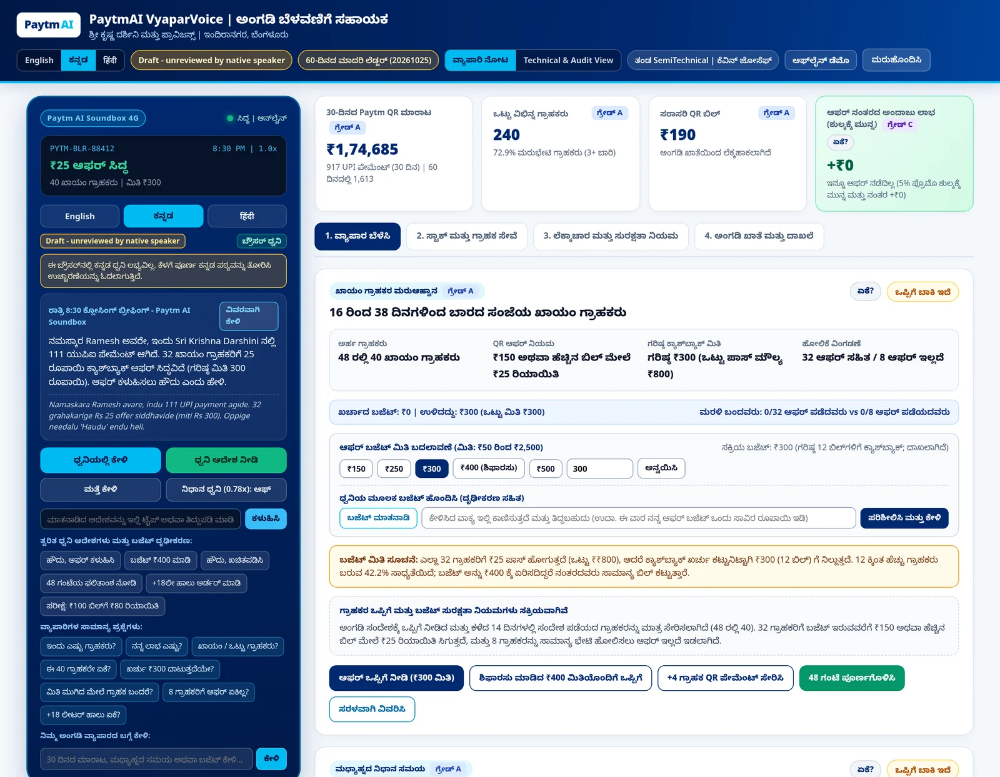
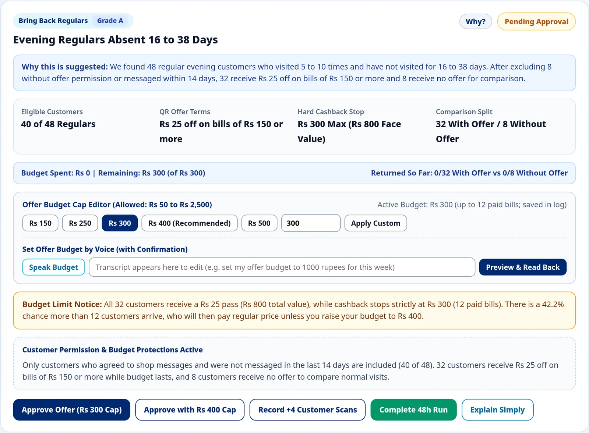
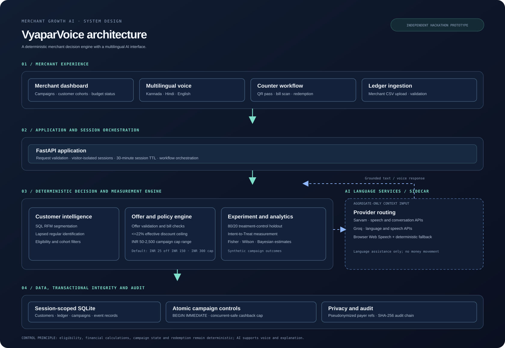

CURRENTLYMBA, Business Analytics, CHRIST University
FOCUSData Science, Applied AI, Business Analytics, Finance and Marketing
FIELD NOTES / 01DATA TO DECISIONS
SUMINSIGHT ENGINE
SYSTEMSLLM + RAG
METHODEvidence first.Measure, test, iterate
PYTHON / SQL / ANALYTICS
25.9% to 83.0%SQL Studio execution accuracy
4Featured projects
21+Top-3 finishes
168Validated banking tables
Project metrics are based on documented evaluation; confidential banking details are excluded.
SELECTED WORK / 01
Projects with a purpose.
One applied AI proof of concept, followed by four projects across financial research, browser-native development, merchant analytics, and risk governance.
FEATURED PROJECT / FEDERAL BANK
SQL Studio (Proof of Concept)
Applied AI Intern, Planning MIS Department, Federal Bank, Aluva, Kerala, April to May 2026
Proof of concept, not a production system.
Problem
Poorly structured schema information made it time-consuming to identify the tables and columns needed to answer internal business questions with SQL. The proof of concept aimed to reduce this manual effort and improve efficiency for a team with limited capacity.
Approach
I built a hybrid retrieval-augmented generation (RAG) natural-language-to-SQL proof of concept from scratch with the Planning MIS team. I applied data engineering and clearer schema context to help the system interpret business questions and generate more accurate SQL.
Evaluation and outcome
Execution accuracy improved from 25.9% with the base Qn model to 83.0% after data engineering and schema-context improvements. Execution accuracy means generated SQL runs and returns the same data as an analyst-written query for the same business question.
Projected impact
Calculated projection of over 4,070 hours saved per year across the team. This is a projection, not realised savings.
Confidential banking details are excluded.
01 / FINANCIAL AI↗
RETRIEVE, REASON, CITE
PythonHybrid retrievalChromaDBBM25LLMs
FinSight India
An agentic financial research assistant for Indian markets. It retrieves information from company annual reports and RBI circulars, combines dense semantic retrieval with BM25 keyword search using Reciprocal Rank Fusion, and returns cited responses.
Method and limitations
Corpus
Indian company annual reports and RBI circulars.
Retrieval
Dense semantic retrieval and BM25 keyword search are fused with Reciprocal Rank Fusion.
Cited responses
The repository describes source-collection selection, streamed answers, and inline citations back to source pages.
Limitations and next evaluation steps
The README lists future work on public NL2SQL benchmarks (Spider and BIRD), retrieval comparisons, gold-standard questions for faithfulness and citation precision, and latency and cost profiling.
01import pandas as pd02df = pd.read_csv(...)03df.describe()04# explore the data
Python, R, SQL Browser-native
WebAssemblyPythonRSQL
Architect-WASM-IDE
A browser-native development environment for Python, R and SQL built on WebAssembly. The README describes Python through Pyodide, R through WebR, SQL through DuckDB-WASM, and an in-browser CSV data profiler.
Execution modelThe repository describes an analytical workspace that runs in the browser without a project backend.
A multilingual merchant-retention copilot that turns transaction history into customer win-back campaigns. It combines SQL-based RFM segmentation, deterministic offer and cashback controls, an 80/20 treatment-control design, and voice-led explanations in Kannada, Hindi, and English.
Hackathon finalistPaytm Build for India AI Hackathon 2026 · Track 1: Merchant Growth AI · One of 130 finalists.
Independent solo project developed for the hackathon. It is not an official Paytm product, integration, or endorsement.
Explore the system, evaluation and evidence
From transaction data to a measured retention workflow
The product workflow is Detect → Propose → Cap → Measure. It identifies lapsed regulars, recommends a bounded win-back offer, protects the merchant's campaign budget, and measures outcomes against a holdout group. The language interface explains decisions; it does not calculate financial outcomes or execute campaign accounting.
Customer intelligence
SQL RFM analysis and eligibility filters identify customers who were previously regular but have become inactive. The workflow is designed for merchant decision support rather than automated mass messaging.
Offer and financial controls
The effective discount ratio is capped at 22% (offer amount ÷ minimum qualifying bill). Configurable campaign spend caps range from ₹50 to ₹2,500; the default campaign cap is ₹300, with a default offer of ₹25 off a ₹150 minimum bill.
Transactional integrity
SQLite BEGIN IMMEDIATE transactions enforce cashback limits under concurrent redemption attempts. The Intent-to-Treat denominator is retained when the cap binds, preserving the treatment-control comparison.
Multilingual AI architecture
Live integrations are implemented for Sarvam and Groq speech and language services. Public anonymous sessions use pre-generated Sarvam audio, browser speech and deterministic templates; a PIN-unlocked session can use live provider APIs.
Experiment design
An 80/20 treatment-control holdout supports Intent-to-Treat measurement. In the synthetic 48-hour scenario, 12 of 32 treatment customers and 1 of 8 control customers returned; Fisher's exact test gives p = 0.2364, so the difference is not statistically significant. The Bayesian estimate gives an 88.8% posterior probability that the treatment return rate exceeds control. A separate binomial model estimates a 42.2% chance that the cashback cap binds under its stated assumptions. The analytics layer also includes Wilson intervals and a multi-shop statistical power simulator.
Deterministic evaluation
All 60 cases passed across multilingual intent and readback, prompt-injection and policy guardrails, numeric grounding, and outbound PII blocking. This is a deterministic software benchmark, not live speech-recognition or raw LLM accuracy.
Privacy and auditability
Raw payer references are not persisted in cleartext or supplied to external LLM prompts; only aggregate store facts are passed to language models. Identifier hashes are pseudonymous, not irreversible anonymization. The application also maintains a SHA-256 audit chain. The prototype has no live customer consent-capture flow; a CSV without a consent field currently defaults imported records to opted-in, which must be changed before real deployment.
Implementation ownership
Solo project. I conceived and directed the product, architecture, policy specifications, evaluation criteria, deployment and validation. Implementation was developed iteratively with Arena.ai Agent Mode; Claude was used for product critique, architectural review and prompt development.
Interface and decision evidence

Merchant dashboard with Kannada briefing and campaign overview.

Recommendation rationale, eligibility funnel and campaign controls.

Layered system architecture. Financial logic and campaign state remain deterministic.
Scope, assumptions and limitations
The default merchant, 240 customer profiles and 1,613 transactions are synthetic. No real merchant pilot, customer messaging campaign or field usability test has been conducted. Campaign outcomes are simulated, not observed retention. The simulated economics estimate ₹1,740 in net incremental gross sales, ₹222 pre-fee profit and ₹91.50 post-fee profit. The 5.8x figure is incremental gross sales per rupee of cashback, not profit ROI. The ₹91.50 result assumes a 30% store gross margin and a 5% promotional fee; neither is an observed commercial term. The hackathon submission was v1.5.0; v1.6–v1.8 are subsequent engineering upgrades in the source repository.
An AI platform for enterprise IT governance and pre-implementation project risk review. It assesses legal, regulatory compliance, data protection and privacy, AML, IT security, and governance and SDLC control risks.
Evidence-first reviewThe README describes retrieved evidence, confidence scoring, flags for unsupported or vague claims, and an audit trail.
Applied research, data work, and programme leadership across banking, community initiatives, and research training.
OCT - DEC 2026
SDG Research and Data Fellow, UN Volunteers Programme
FELLOWSHIPONGOING
Ongoing assignment through 31 December 2026.
21 SEP - 16 OCT 2026
Data Science Intern, IDEAS-TIH, ISI Kolkata
COMPLETED
Completed the four-week Autumn Internship Programme on Data Science at IDEAS, the Institute of Data Engineering, Analytics and Science Foundation, at the Technology Innovation Hub of the Indian Statistical Institute, Kolkata.
Project: Industrial Product Demand Forecasting.
JUL 2025 - PRESENT
Vice President
LEADERSHIP
The Uttranka Foundation
Director of Advisory Committee since July 2025; Vice President since September 2026.
ONGOING
Provides strategic counsel to foundation leadership on organisational direction, partnership evaluation, and funding opportunities.
FEB 2026 - PRESENT
Program Director
LEADERSHIPONGOING
Changemakers
Co-Founder and Strategy Lead since February 2026; Program Director since September 2026.
Leads strategy, content operations, opportunity curation, and workshops for a student opportunity-access initiative.
Teaching
Delivered two Excel and data analysis workshops and SQL workshops for learners in Myanmar. Sessions are recorded and published on the Changemakers YouTube channel.
Federal Bank, Planning MIS Department, Aluva, Kerala
Built SQL Studio from scratch as a hybrid retrieval-augmented natural-language-to-SQL proof of concept with the Planning MIS team.
Improved execution accuracy from 25.9% to 83.0% through data engineering and clearer schema context.
MAY - JUL 2025
Summer Fellow
FELLOWSHIP
Restless Dreamers
One of 44 fellows in the founding cohort to complete the capstone.
Intensive learning across public policy, economics, statistics, and finance, assessed through analytical rigour and evidence-based problem-solving.
ADDITIONAL EXPERIENCE AND INITIATIVES
Other work and community contributions
INDEPENDENT INITIATIVE | JUL 2024 TO APR 2026
Some Resources
Educational Resource Initiative
Curated and shared global educational resources, grants, competition opportunities, and career information via Substack, supporting students from Tier 2 and Tier 3 cities and first-generation college backgrounds. This initiative informed the founding strategy for Changemakers.
Supported campus recruitment drives and built working relationships with corporate recruiters, including Goldman Sachs, Stripe, RSM (USA), and Target.
MAY TO JUNE 2023
Social Work Intern
Little Sisters of the Poor, Bengaluru
Completed a social work internship and was one of the two best-performing interns in a cohort of 15.
EDUCATION / 03
Education
IN PROGRESS
MBA, Business Analytics
CHRIST (Deemed to be University), Bengaluru
May 2025 to May 2027COMPLETED
Postgraduate Program in Data Science and Artificial Intelligence
MIT xPRO
September 2025 to September 2026. One-year programme.COMPLETED
BBA, Marketing
St Joseph's College of Commerce (Autonomous), Bengaluru
August 2022 to April 2025
CERTIFICATIONS AND PROFESSIONAL LEARNING
Professional learning
SELECTED | INCOMING
FinTech Certificate Programme for Young Professionals
Indian Institute of Management Bangalore
Batch 2. Scheduled to commence in November 2026. Six-month programme divided into Part A (3 months) and Part B (3 months).
COMPLETED
Bloomberg Financial Certifications
Bloomberg | July 2025
Bloomberg Market Concepts, Finance Fundamentals, Spreadsheet Analysis, and Environmental, Social and Governance (ESG).
COMPLETED
Code in Place
Stanford University
Completed Stanford's Code in Place programming course.
IN PROGRESS
Probability for AI
Stanford University
Currently studying probability concepts for artificial intelligence.
VALID THROUGH JUNE 2028
Oracle Cloud Infrastructure 2025 Certified AI Foundations Associate
Oracle | Issued June 2026
This credential is time-bound and valid through June 2028.
ABOUT / 04
Business problems, data science, and applied AI.
I am interested in how data science, business analytics, and applied AI can improve research, decision-making, and work with complex information.
My portfolio spans financial-document retrieval, browser-based developer tooling, merchant analytics, and AI-assisted risk review. I approach projects by defining the problem, choosing methods that fit the use case, and making the resulting workflow inspectable and useful.
SKILLS AND DOMAIN KNOWLEDGE
Tools and Technologies
PythonSQLPower BIMS Excel
Data Science and Applied AI
Data ScienceData AnalyticsBusiness AnalyticsApplied AIGenerative AIRAG and LLM ToolingAgentic Retrieval SystemsVector DatabasesModel Evaluation and BenchmarkingExploratory Data Analysis